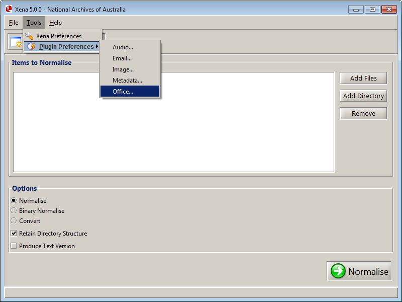
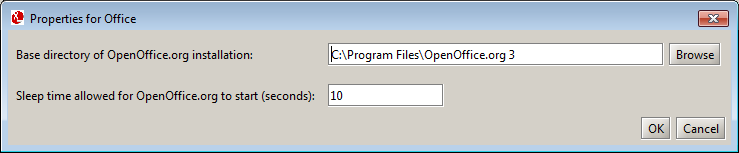

The external tool for converting office documents to Open Document Format (ODF) is LibreOffice.
Note: If you have not already done so, please install the latest version of LibreOffice as it is not bundled with Xena.
LibreOffice (http://www.libreoffice.org) is a free and open source office suite which supports numerous file formats.
LibreOffice must be installed to enable Xena to convert word processed documents, spreadsheets and presentations into Open Document Format (ODF), ISO 26300. If LibreOffice is not installed, Xena will only binary normalise these file types. For more information about Binary Normalisation, see Normalising Files.
It is recommended that you use the latest version of LibreOffice, which may be downloaded free of charge from http://www.libreoffice.org/download/.
Normalisation will be more reliable if a single version of LibreOffice is installed on your computer. For this reason, it is recommended that you remove any earlier versions of LibreOffice from your system, making sure you only have the latest version installed.
Depending on your operating system, LibreOffice will typically be installed in the following location:

Result: The office properties window is displayed.

Note: This option allows you to tell Xena how long to wait for LibreOffice to load. The default value is 5 seconds.
Some slower systems take longer to load LibreOffice, which may result in Xena being unable to contact it to perform file conversion.
If using a fast computer, reducing this value (perhaps down to just a few seconds) may decrease the time required to convert a large amount of office files.